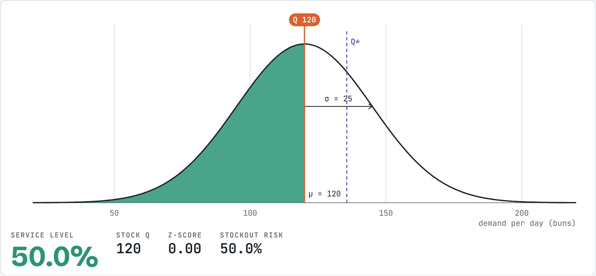
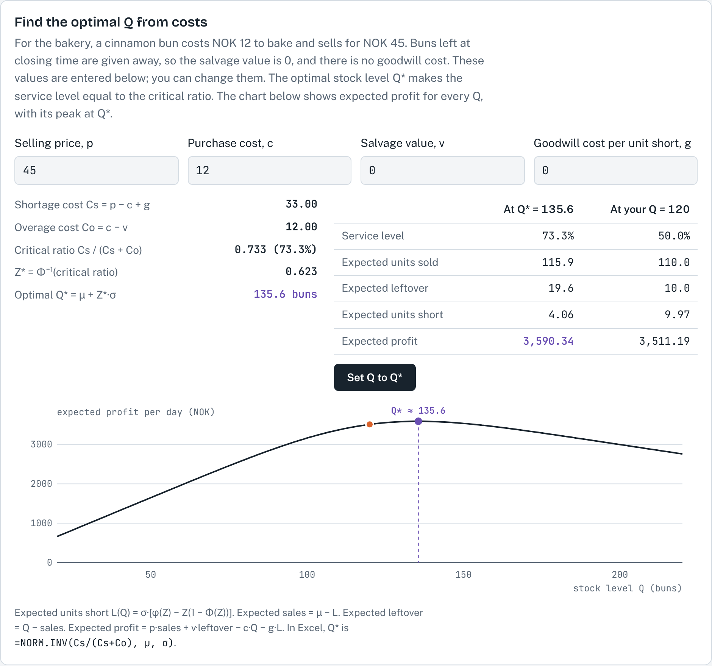
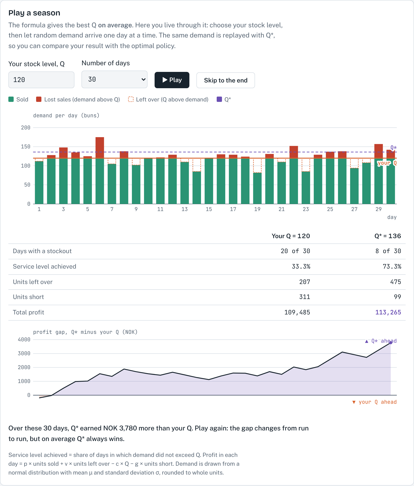

1About this simulation
Some products can only be sold for one short period: today's newspaper, fresh bread, flowers for a holiday, a fashion item for one season. The order must be placed before demand is known, there is no second chance to reorder, and what is left over at the end is sold cheaply or thrown away. If we stock too little, we lose sales; if we stock too much, we lose money on the leftovers. This is the single-period inventory model, often called the newsvendor problem.
The simulation follows one case: a bakery that bakes cinnamon buns fresh every morning, before it knows how many customers will come. Daily demand is roughly normal with a mean of 120 buns and a standard deviation of 25. In the cost section, the prices are added: a bun costs NOK 12 to bake and sells for NOK 45, and buns left at closing time are given away.
You choose the stock level Q and see the service level, the probability that demand does not exceed Q, as a shaded area under the curve. A cost section then finds the stock level that gives the highest expected profit. Finally, Play a season lets random demand arrive day by day, so you can compare your own stock level with the optimal one over a run of real days.
After working through this guide, you should be able to:
- explain the single-period model and when it applies;
- calculate the service level and the stockout risk for a given stock level when demand is normally distributed;
- calculate the stock level needed for a target service level, and explain how demand uncertainty affects it;
- calculate the cost of shortage, the cost of overage and the optimal service level, and use them to find the optimal stock level Q*;
- explain why a stock level that is best on average can still lose in a short run of random days.
2Theory background
The single-period model
- Only one order is placed for the selling period, before demand is known.
- Units have little or no value at the end of the period. Leftover units are sold at a salvage value or discarded.
- Demand that cannot be met is lost; it is not backordered.
- The decision is a single number: the stock level Q.
Notation
The notation is the same as in the course formula sheet. In the simulation, demand is normally distributed.
| Symbol | Meaning |
|---|---|
| μ, σ | Mean and standard deviation of demand in the period (buns per day) |
| Q, Q* | Stock level at the start of the period; optimal stock level |
| SL | Service level: probability that demand is less than or equal to Q |
| Z | Number of standard deviations above the mean, Z = (Q − μ) / σ |
| Φ(Z) | Area under the standard normal curve to the left of Z (from a normal table or Excel) |
| p, c, v | Selling price, purchase cost and salvage value per unit (NOK/unit) |
| g | Goodwill cost per unit short, if any (NOK/unit); zero by default |
| Cs, Co | Cost of shortage and cost of overage per unit (NOK/unit) |
Service level for a given stock level
The service level is the area under the demand curve to the left of Q. With normal demand, we first convert Q to a Z-value and then read the area from the normal table:
The term Z × σ is the safety stock: the stock held above average demand to protect against uncertainty. For the same service level, a larger σ requires more safety stock. In Excel, SL is =NORM.DIST(Q, μ, σ, TRUE) and Q is =NORM.INV(SL, μ, σ).
Worked example (cinnamon buns). μ = 120, σ = 25. The bakery bakes Q = 150 buns.
- Z = (150 − 120) / 25 = 1.20, so SL = Φ(1.20) = 88.5% and the stockout risk is 11.5%.
- For a target of 95%, Z = 1.645 and Q = 120 + 1.645 × 25 = 161.1, which rounds to 161 buns.
Choosing the stock level from costs
A higher service level is not always better: every extra unit stocked is less likely to be sold. The best stock level balances two costs per unit:
The logic is marginal: stocking one more unit gains Cs if that unit is sold and loses Co if it is left over. It pays to add units until the probability of selling the next one has fallen to Co / (Cs + Co), which is the same as setting P(demand ≤ Q) = Cs / (Cs + Co). When Cs is large compared with Co, the optimal service level is high; when Co is larger than Cs, it is below 50% and Q* lies below the mean.
Worked example (cinnamon buns). μ = 120, σ = 25, p = NOK 45, c = NOK 12, v = 0, g = 0.
- Cs = 45 − 12 = NOK 33 and Co = 12 − 0 = NOK 12.
- SL = 33 / (33 + 12) = 0.733 (73.3%), so the stockout risk is 26.7%.
- Z for an area of 0.733 is 0.623, so Q* = 120 + 0.623 × 25 = 135.6 buns, about 136. A lost sale costs almost three times as much as a leftover bun, so the bakery should bake more than the average demand.
Expected sales, leftovers and profit
The cost section of the simulation also shows what happens on average at a given Q. These formulas are an extension for learners who want to see where the numbers come from; the hand calculations in this course use the formulas in 2.3 and 2.4.
3How to use the simulation
Getting started
- The page opens with the cinnamon bun case: μ = 120, σ = 25 and Q = 120. The case text above the chart describes the demand. The prices (p = NOK 45, c = NOK 12, v = 0, g = 0) are given in the cost section, where they are needed to find Q*.
- Set the mean demand μ and the standard deviation σ in the Model settings.
- Choose the initial stock level Q with the slider, or use Or set a target service level to let the simulation find Q for a chosen service level. Q is rounded to whole buns.
- In Find the optimal Q from costs, change the selling price p, purchase cost c, salvage value v and, if you wish, a goodwill cost g. Set Q to Q* moves the stock level to the optimum (rounded to whole buns).
- In Play a season, choose your stock level and the number of days (10, 30 or 60), then press Play, or Skip to the end to see the result at once. Each run draws new random demand.
- The Check your understanding box generates new practice questions on the service level and the stock level. Press Show solution to see the working.
What you see

- Curve: the normal demand distribution, with the mean μ (dashed line) and one standard deviation σ marked.
- Green area and orange line: your stock level Q and the service level P(demand ≤ Q). The unshaded area to the right is the stockout risk.
- Purple dashed line, Q*: the optimal stock level from the cost section.
- Readout: service level, stock Q, Z-value and stockout risk.


Play a season replays the same random demand for two policies, your Q and Q*:
- Bar chart: demand on each day. Green is buns sold, red is lost sales (demand above Q), and a dashed outline shows buns left over. The solid orange line is your Q and the dashed purple line is Q*.
- Table: days with a stockout, the service level achieved (the share of days on which demand did not exceed Q), buns left over, buns short and total profit for both policies.
- Profit gap chart: the running difference in profit, Q* minus your Q. Above zero, Q* is ahead; below zero, your Q is ahead.

Try this
A. Service level and stock level
- With μ = 120 and σ = 25, set Q to 120, 135, 150, 165 and 180. Calculate Z and the service level by hand first, then complete the table below with the simulation.
- Each step of 15 buns adds the same amount of stock. Does it add the same amount of service level? What does that mean for the cost of a very high service level?
| Q | Z | Service level | Stockout risk |
|---|---|---|---|
| 120 | |||
| 135 | |||
| 150 | |||
| 165 | |||
| 180 |
B. Target service level and uncertainty
- Use the target slider to find the stock level for 50%, 90%, 95% and 99%. Check each with Q = μ + Z × σ.
- Set Q = 150 and change σ from 25 to 50. What happens to the service level? Then use the target slider to restore about 88%. How many buns do you need now?
- Set σ = 10 with Q = 150. Explain the result in terms of safety stock.
C. The cost-optimal stock level
- Return to μ = 120, σ = 25 and the default costs. Calculate Cs, Co, the optimal service level and Q* by hand, and check them in the simulation.
- Compare the table columns for Q* and Q = 150. Which Q sells more, and which gives the higher expected profit? Why?
- Change one input at a time and record Q* in the table below. Return each input to its default before the next change.
| Change | Cs | Co | Optimal SL | Q* |
|---|---|---|---|---|
| Defaults | ||||
| Salvage value v = NOK 6 | ||||
| Purchase cost c = NOK 20 | ||||
| Goodwill cost g = NOK 10 | ||||
| Selling price p = NOK 35 |
D. Saturdays at the bakery
- On Saturdays, demand is higher and less predictable: normal with μ = 180 and σ = 30. A nearby café buys any leftover buns at closing time for NOK 8 each. Price and cost stay the same. Set μ, σ and v accordingly. How many buns should the bakery bake on a Saturday, and what is the stockout risk?
E. Play a season
- Return to the defaults (reload the page). With Q = 120, play 30 days three times. Each time, record the days with a stockout, the service level achieved and the total profit for your Q and for Q*.
- Is the service level achieved by Q* exactly 73.3% in every run? Why not? Play 60 days and compare.
- Did your Q ever earn more than Q*? How can that happen if Q* maximises expected profit?
- Set Q = 160 and play again. Which policy has more buns left over, and which earns more? Explain with Cs and Co.
4Check your understanding
- Daily demand is normal with μ = 200 and σ = 40. What stock level gives a 90% service level?
- With the same demand, a shop stocks 180 units. What are the service level and the stockout risk?
- A bakery sells croissants for NOK 40. Each costs NOK 15 to make, and leftovers are sold to a café for NOK 5 at the end of the day. Demand is normal with μ = 150 and σ = 20. Find Cs, Co, the optimal service level and Q*.
- The bakery decides that every unhappy customer also costs NOK 10 in lost goodwill. How do Cs and Q* change?
- A product sells for NOK 60, costs NOK 50 and has a salvage value of NOK 10. Demand is normal with μ = 200 and σ = 40. Find Q*. Why is it below the mean demand?
- Explain in two or three sentences why the optimal service level in the single-period model is usually not 99%.
References
MSB255 Supply Chain and Operations Management: course materials. University of Stavanger.
Cachon, G., & Terwiesch, C. (2019). Matching Supply with Demand: An Introduction to Operations Management (4th ed.). McGraw-Hill Education.
Heizer, J., Render, B., & Munson, C. (2017). Operations Management: Sustainability and Supply Chain Management (12th ed.). Pearson.
Answers and expected resultsTry the exercises first, then open to check
Simulation results
| Run | Result |
|---|---|
| A. Q = 120 / 135 / 150 / 165 / 180 | Z = 0 / 0.60 / 1.20 / 1.80 / 2.40; SL = 50.0% / 72.6% / 88.5% / 96.4% / 99.2%; stockout risk = 50.0% / 27.4% / 11.5% / 3.6% / 0.8% |
| A. Diminishing returns | The first 15 buns above the mean add 22.6 percentage points, the next 15 add 15.9, then 7.9, and 165 to 180 adds only 2.8. Very high service levels need a lot of extra stock. |
| B. Target 50 / 90 / 95 / 99% | Q = 120 / 152 / 161 / 178 (the simulation shows the actual SL of the rounded Q, e.g. 94.9% at Q = 161) |
| B. σ = 50, Q = 150 | Z = 0.60, SL falls to 72.6%. Restoring about 88.5% needs Q = 180 (safety stock 60 instead of 30). |
| B. σ = 10, Q = 150 | Z = 3.00, SL = 99.9%: with less uncertainty, the same 30 buns of safety stock protect much more. |
| C. Defaults | Cs = NOK 33, Co = NOK 12, SL = 0.733, Z = 0.623, Q* = 135.6 |
| C. Q* vs Q = 150 | Q = 150 sells a little more (118.6 vs 115.9) but leaves 31.4 buns over instead of 19.6; expected profit NOK 3,536.88 vs NOK 3,590.34 at Q*. |
| C. v = NOK 6 | Co = NOK 6, SL = 0.846, Q* = 145.5 |
| C. c = NOK 20 | Cs = NOK 25, Co = NOK 20, SL = 0.556, Q* = 123.5 |
| C. g = NOK 10 | Cs = NOK 43, SL = 0.782, Q* = 139.5 |
| C. p = NOK 35 | Cs = NOK 23, SL = 0.657, Q* = 130.1 |
| D. Saturdays | Cs = NOK 33, Co = NOK 4, SL = 0.892, Z = 1.237, Q* = 180 + 1.237 × 30 = 217 buns; stockout risk 10.8% |
| E. Q = 120 vs Q* | Results differ from run to run. On average Q = 120 has a stockout on about half of the days and Q* = 136 on about one day in four. Expected daily profit is NOK 3,511 at Q = 120 and NOK 3,590 at Q*, so over 30 days Q* earns about NOK 2,400 more on average. |
| E. Achieved SL varies | The achieved service level is a sample from random demand, so it scatters around the expected 73.9% (Q* rounded to 136). With 60 days it is usually closer, because a longer run averages out more of the luck. |
| E. Your Q can win | Q* maximises expected profit, not the profit of every run. In a run with many low-demand days, a smaller Q wastes fewer buns and can come out ahead. |
| E. Q = 160 | Q = 160 rarely runs out (SL about 94.5%) but leaves about 41 buns per day instead of 20. Each leftover bun loses NOK 12 while each extra sale gains NOK 33, and at Q = 160 extra buns are rarely sold. Expected daily profit is NOK 3,454 against NOK 3,590 at Q*. |
Check your understanding
- Z for 90% = 1.28, so Q = 200 + 1.28 × 40 = 251.2, about 251 units.
- Z = (180 − 200) / 40 = −0.50, so SL = Φ(−0.50) = 30.9% and the stockout risk is 69.1%.
- Cs = 40 − 15 = NOK 25; Co = 15 − 5 = NOK 10; SL = 25 / 35 = 0.714; Z ≈ 0.57; Q* = 150 + 0.57 × 20 ≈ 161 croissants.
- Cs = 25 + 10 = NOK 35; SL = 35 / 45 = 0.778; Z ≈ 0.76; Q* = 150 + 0.76 × 20 ≈ 165 croissants. A higher shortage cost raises the optimal stock.
- Cs = 60 − 50 = NOK 10; Co = 50 − 10 = NOK 40; SL = 10 / 50 = 0.20; Z ≈ −0.84; Q* = 200 − 0.84 × 40 ≈ 166 units. An unsold unit loses four times as much as a lost sale, so it pays to stock below the mean and accept a stockout risk of 80%.
- Each extra unit only adds a little service level but is increasingly likely to be left over. The best service level is where the expected gain from one more unit equals its expected loss, Cs / (Cs + Co), which is 99% only if the cost of shortage is about 99 times the cost of overage.